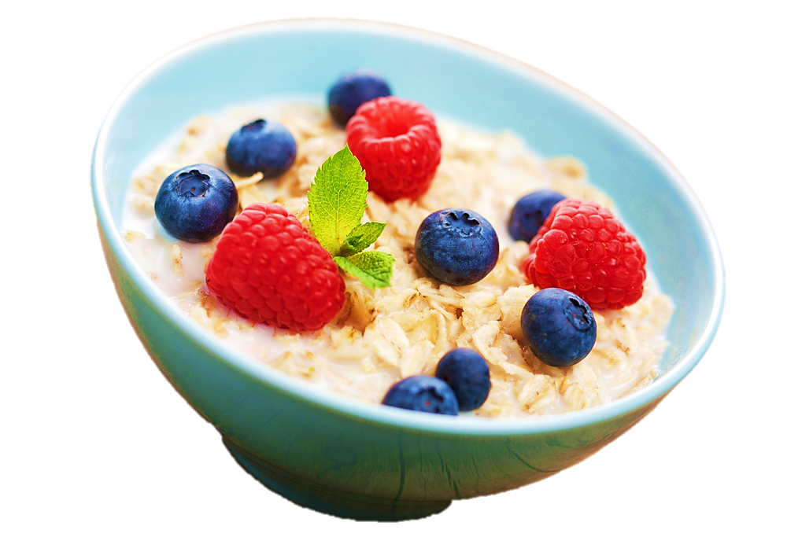
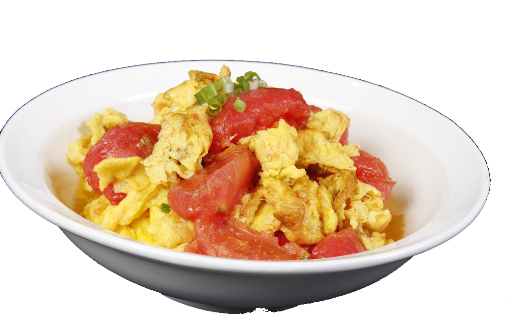
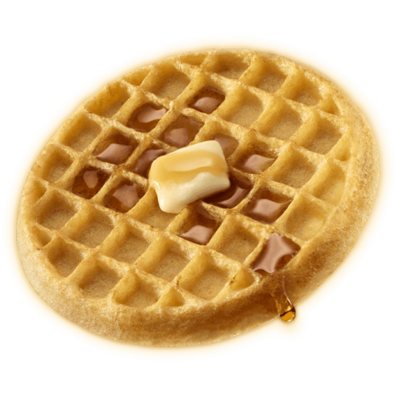
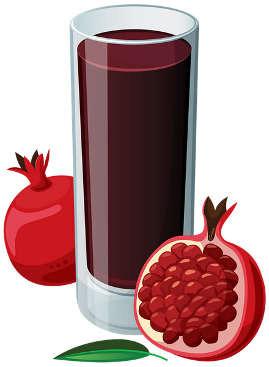
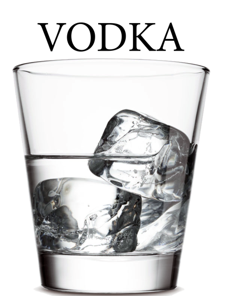

Coffee
Эспрессо
Описание: Крепкий и насыщенный кофе, приготовленный путем пропускания горячей воды под давлением через мелко молотые зерна.
Вкус: Интенсивный, с ярко выраженной горечью и легкой сладостью.
Объем: 30-40 мл.
Американо
Описание: Эспрессо, разбавленный горячей водой, менее крепкий, но сохраняет аромат.
Вкус: Мягкий, с менее выраженной горечью.
Объем: 150-240 мл.
Капучино
Описание: Состоит из равных частей эспрессо, горячего молока и взбитой молочной пены.
Вкус: Сбалансированный, с нотами кофе и молока.
Объем: 150-180 мл.
Латте
Описание: Эспрессо с добавлением горячего молока и молочной пены.
Вкус: Мягкий и сливочный, с легким кофейным ароматом.
Объем: 240-350 мл.
Black Mocha
Описание: Сочетание эспрессо с шоколадным сиропом, иногда с добавлением молока.
Вкус: Сладкий и насыщенный, с шоколадными нотами.
Объем: 240 мл.
Caramel Latte
Описание: Латте с добавлением карамельного сиропа.
Вкус: Сладкий и кремовый, с карамельными нотами.
Объем: 240-350 мл.
Vanilla Raf
Описание: Кофе с добавлением ванильного сиропа и взбитых сливок.
Вкус: Сладкий и сливочный, с ярким ванильным ароматом.
Объем: 250-300 мл.
Завтраки
Овсянка с фруктами
Описание: Питательная овсянка с ягодами и бананом, подается с медом.
Время приготовления: 10 минут
Яичница с помидорами
Описание: Яичница с помидорами, шпинатом и сыром, подается с тостом.
Время приготовления: 15 минут
Венские вафли
Описание: Нежные вафли, подаваемые с ягодами и взбитыми сливками.
Время приготовления: 20 минут
Меню Холодных Напитков
Кока-Кола

Описание: Классический газированный напиток с уникальным вкусом.
Объем: 0.5 л.
Фanta

Описание: Яркий и освежающий газированный напиток с фруктовым вкусом.
Объем: 0.5 л.
Гранатовый сок
Описание: Освежающий напиток из граната, подается с льдом.
Объем: 0.5 л.
Меню Фаст-фуда
1. Бургер с говядиной

Ингредиенты:
- Говяжий фарш
- Булочки для бургеров
- Листья салата
- Помидоры
- Лук
- Сыр (по желанию)
- Соусы (кетчуп, майонез, горчица)
Приготовление:
Сформируйте котлеты из говяжьего фарша и обжарьте их на сковороде или гриле до желаемой степени готовности. Поджарьте булочки на сковороде. Соберите бургер: на нижнюю половину булочки положите котлету, добавьте сыр, салат, помидоры и лук. Полейте соусами и накройте верхней половиной булочки.
2. Картофель фри

Ингредиенты:
- Картофель
- Растительное масло
- Соль
- Специи (по желанию)
Приготовление:
Нарежьте картофель на тонкие полоски. Разогрейте масло в глубокой сковороде или фритюрнице. Обжаривайте картофель до золотистой корочки, затем выложите на бумажное полотенце, чтобы избавиться от лишнего масла. Посолите и добавьте специи по вкусу.
3. Чизкейк в стакане

Ингредиенты:
- Песочное печенье
- Сыр Филадельфия или творожный сыр
- Сахар
- Ванильный экстракт
- Сливки (по желанию)
- Ягоды или фруктовый соус для украшения
Приготовление:
Измельчите печенье и выложите его на дно стаканов. В миске смешайте сыр, сахар и ванильный экстракт до однородной массы. Можно добавить взбитые сливки для легкости. Выложите сырную массу поверх печенья в стаканах. Украсить ягодами или фруктовым соусом и охладите перед подачей.
Алкоголь
Водка
Крепкий алкогольный напиток, получаемый путем дистилляции.
Вино

Напиток, получаемый из ферментированных виноградных ягод.
Пиво

Алкогольный напиток, приготовленный из солода, хмеля, воды и дрожжей.